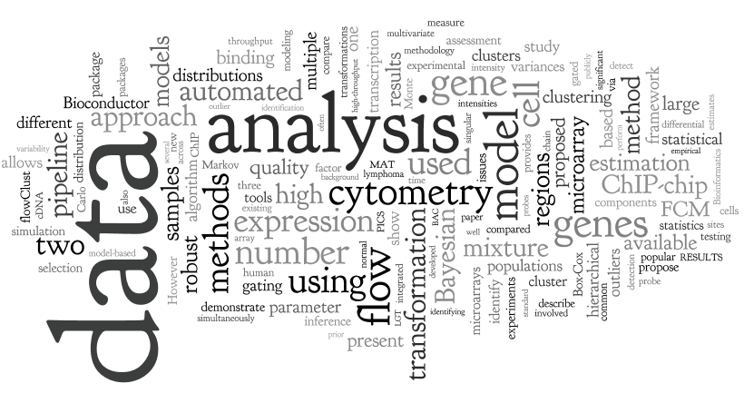

Announcement: We are currently looking for talented postdocs and programmers to join our group. Contact us for more details.
About us
We are part of the Vaccine and Infectious Disease Division of the Fred Hutchinson Cancer Research Center in Seattle.
We develop cutting edge statistical methods and software tools for the analysis of high throughput biological data with
an emphasis on immunology and vaccine research. In particular we are interested in using system approaches, high throughput assays, and state-of-the-art computational approaches to predict how the immune system will respond to a particular infection of vaccination. We work with bench scientists and clinicians to understand and ultimately help develop vaccines and/or cure severe diseases such HIV, malaria and cancer.
RGLab group members in 2014 (on the roof deck of the Arnold building)
From left to right: Jingyuan, Lynn, Mike, Sangsoon, Phu, Renan, Jacob, Leo, Raphael, Greg F., and Masanao.

RGLab research keywords
Here are some keywords that best represent our research.